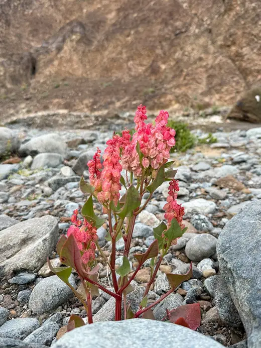
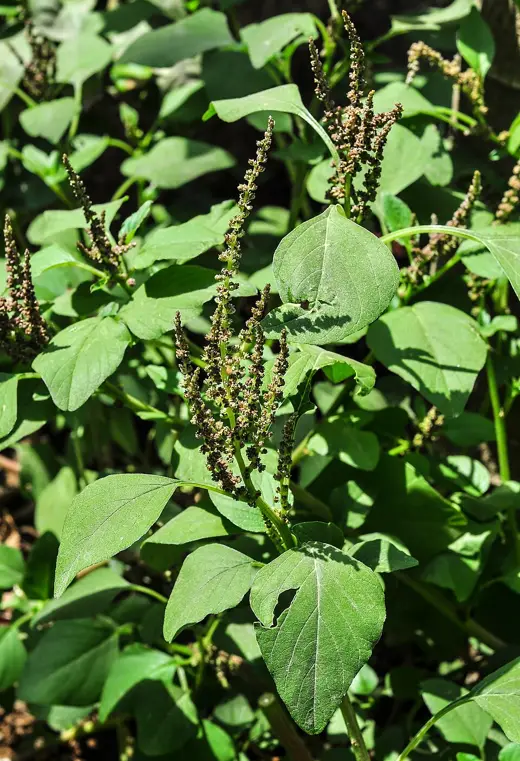
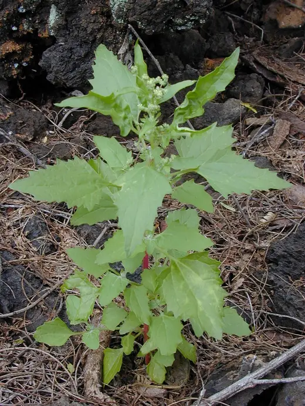
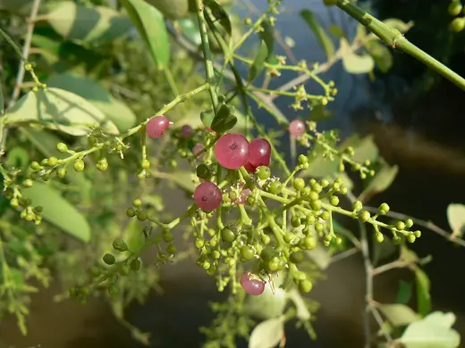
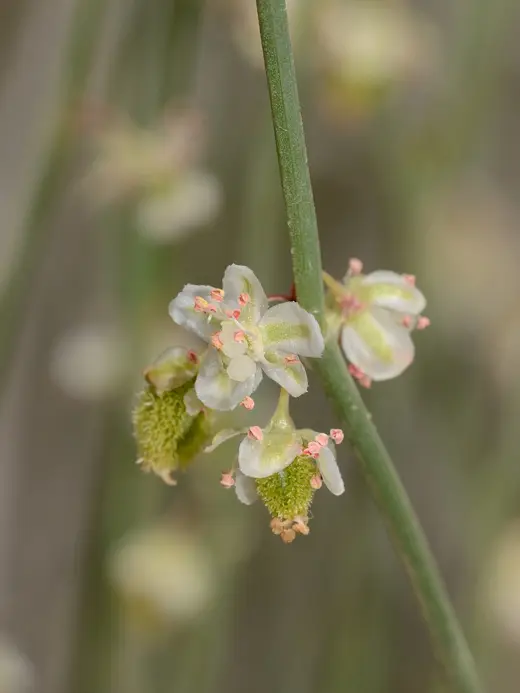

Wild plants you can forage in the UAE
17 wild greens, berries, nuts, roots and flowers, with when each is in season, where it grows, how to harvest it and what to cook.
Greens

Bladder dockDec–Mar Ghaf leaves and podsMar–Jun
Ghaf leaves and podsMar–Jun
Green amaranthApr–Nov MallowNov–Apr
MallowNov–Apr
Nettle-leaved goosefootNov–Apr PurslaneMar–Nov
PurslaneMar–Nov Sow thistleNov–Apr
Sow thistleNov–Apr Wild drumstick treeFeb–May
Wild drumstick treeFeb–May
Fruit & berries

Arak berriesApr–Jun
Arta fruitFeb–Apr DatesJun–Sep
DatesJun–Sep MulberriesMar–May
MulberriesMar–May Sidr fruitNov–Apr
Sidr fruitNov–Apr
 CapersMar–Jun
CapersMar–Jun Desert truffleJan–Apr
Desert truffleJan–Apr